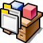
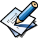
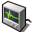

Kosmos Launcher Sidebar
The launcher's categories become a column of rows down its left side, each as tall as a menu row. Resting the pointer on one shows its applications at once, with no click, so you browse by moving the mouse down the list.
"the categories are good but they are small and hard to click … i want to convert the categories into menus (like a sidebar of items) where i can browse with the mouse without needing to click down", and "its crucial that i can navigate all the menus without clicking down as we do now with the old menu" - Diego, 7 October
Drawn again with two additions: a Recently used row under All, and a power row along the launcher's foot whose Restart and Shut Down open a window asking you to confirm.
"the new menu launcher needs a sutdown menu (possibly aligned to the bottom) and that shutdown opens a shutdown/restart", and "can we add a new extra menu called "Recently used" and we will be adding all the recently opened apps as a shortcut?" - Diego, 7 October
Move the pointer down the sections on the left, and press Restart or Shut Down at the foot. The launcher is drawn as it would open from the dock's Kosmos button; what Recently used holds here is made up.
Shut down Kosmos?
Every application is asked to close first, so one with unsaved work can say so.

Kosmos

What changes
A row under All: the applications you started last, newest first rather than A to Z, each once, up to fifteen (three rows of the grid). Its count is how many it holds; the row is left out until something has been started.
Nothing keeps one today: the window manager knows what is running, not what ran. So starting a program - from the launcher, the dock, the Deskbar's menu, Tracker or open - goes through one door that also writes it to /Home/Preferences/recent, a file of names one a line. Started twice, it moves to the top.
Along the launcher's foot, the whole width: the version and how long the machine has been up at the left, Restart and Shut Down at the right, as in KDE's. Each closes the launcher and opens a window in the middle of the screen asking you to confirm. No Sleep: Kosmos cannot suspend a machine yet, and a button that does nothing is worse than none.
Says what is about to happen, with Cancel and the action (Return takes it, Escape cancels), and does it by itself after 30 seconds unless cancelled, as KDE's does - so a machine you walked away from still goes off. It is the same request the Deskbar's menu sends today, wm's power.
All, then Applications, System, Development, Demos and Preferences, each a row 46 high across a 236-wide column, its icon, its name and how many it holds. Today's pills are 30 high and as wide as their word.
As in the right-click Kosmos menu, where a submenu opens as the pointer reaches it: resting on a row shows its applications in the grid, so every section can be looked through by moving the mouse alone. The only click is the one that starts an application. A click on a row does the same as resting on it, so a click is never wrong either.
Moving from a row across to the grid passes over other rows on the way. As in a menu, a row is taken only when the pointer slows on it (about a tenth of a second) or moves straight up or down, so the section you aimed from stays shown.
Typing searches every application whatever row is lit, as now; the sidebar shows "Results" lit while there is text, and the row you were on again when it is cleared.
Up and Down move through the rows and show each; Right or Tab goes into the grid; Left comes back; Return starts what is chosen; Escape closes.
The grid is five across beside the column. The panel grows from 600 to 820 wide so the tiles keep their size, and it still fits above the dock on a 1280-wide screen.
Yours to decide
- Hover shows, with the menu's pause so heading for the grid does not switch rows. Recommended. Without it, every diagonal move to the grid lands you in another section.
- An "All" row at the top, every application A to Z, as the launcher opens on today. Or open on Applications. Recommended: All, so a launcher opened to type into shows everything.
- A "Recent" row under All: the last eight you started, newest first. Agreed, as Recently used (below).
- The panel 820 wide rather than 600, so the grid beside the sidebar keeps five tiles a row at today's size. Recommended.
Yours to decide, for the two additions
- Restart and Shut Down as two buttons at the foot, as KDE's are, or one Power button that opens a small menu of the two. Recommended: two buttons - one press to the question, and there are only two.
- The confirming window acts by itself after 30 seconds, or waits for you forever. Recommended: 30 seconds, counted down in the window.
- Recently used holds fifteen, newest first, and sits under All. Recommended.
- A way to clear it: a right press on the row offers "Clear Recently used". Recommended, as the one thing a person would want to do to it.